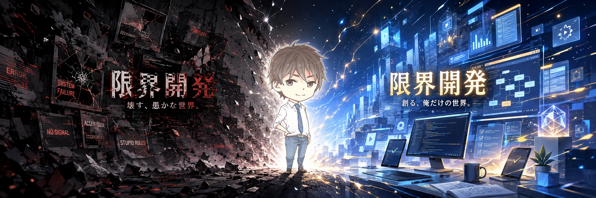

面倒・詰まり・繰り返し作業を見つけたら、AIと既存資源を使って最小の仕組みにする。そして自分で使い、現実で壊し、残す価値があるものだけを公開する。

ここで言いたいのは不幸自慢ではない。
こんな状況でも人は戦えることを証明したいと考えているからに他ならない。
多分、私の現状は「人が変われない」と言うための条件を、ほぼフルコンプリートしている。
ただ、私はまだ諦めていない。
もしも私の現状を見て、貴方の心に闘志が宿ったならば、私はそれを歓迎する。
これが貴方の成し遂げる伝説の序章になることを願って。
旧RTSを作ったあと、「その仕組み自体、本当に必要か？」を自分で攻撃した。そこから開発方法そのものが変わった。
作る前に「そもそも作る必要があるか」を攻撃する。
必要なら、既存案と新しい案を同じ現実条件で戦わせる。
一度勝った実装にも永住権を与えず、より良いものが来たら席を譲らせる。
生活・仕事・開発を同時に立て直しながら、開発は止めない。大きな理想を語る前に、今日いちばん邪魔なものを一つ潰す。
本格システムを入れるほどではない。でも毎回同じ手作業が痛い。そこだけを小さく直す。
CreatorがFirst User。自分の実際の開発・生活フローへ入れ、壊れたら隠さず原因まで戻す。
ここは紹介ページ。実装・履歴・証拠の正本は各リポジトリに置く。
必要性・実装・現職を破壊し、生き残ったものだけを採用する自己進化型開発方法。
WITNESSで生き残った原則と既存能力から再構築した次世代RTS。
システムとしての必要性を自ら否定し、五つの開発原則だけを残した実験。
旧実装、廃止判断、再構築実験、METEORやX Article Engineなどの歴史・証拠を保存。
毎回痛い一工程だけを切り出し、小さなツールで直す。
開発記録を記事化し、Evidence checkを通し、最後の公開権限は人間に残す。
全部を同じ場所に押し込まない。それぞれの役割に合わせて置いている。